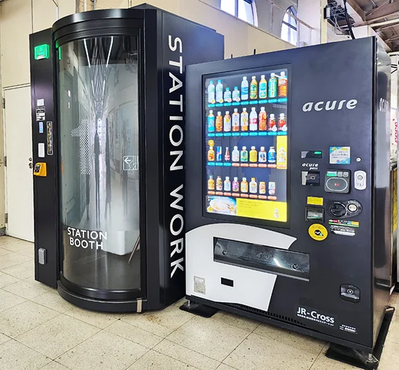
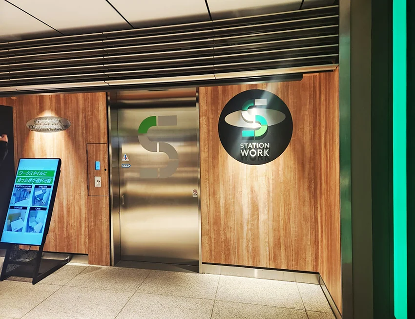
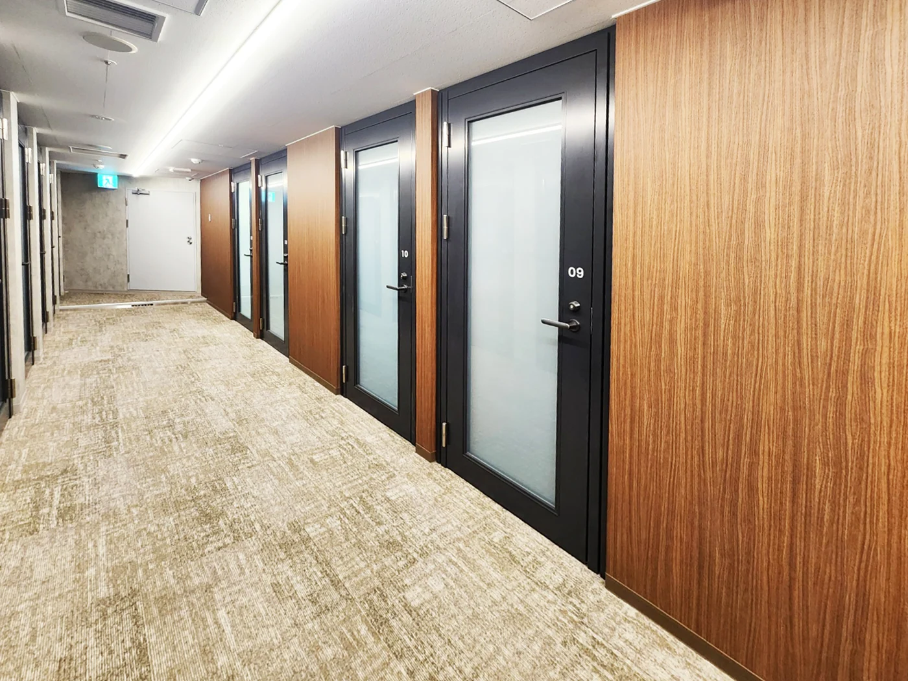
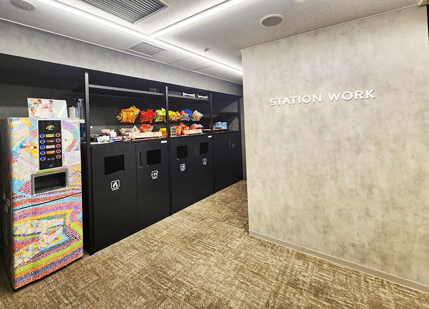
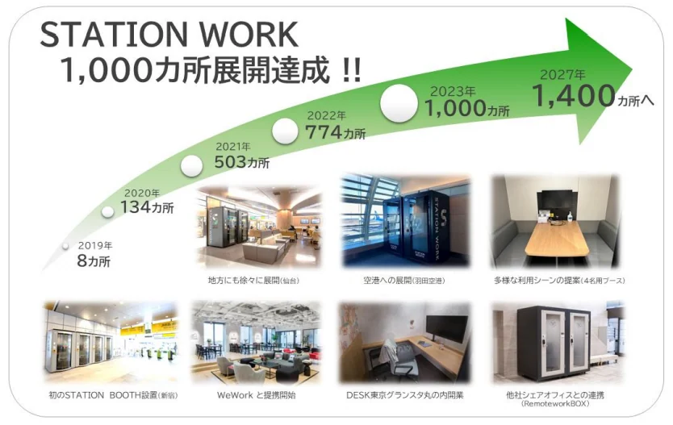

JR STATION WORK / 스마트한 일상적 업무지원을 위한 BYOD 공공오피스
스마트한 일상적 업무지원을 위한 ‘BYOD 공공오피스’
“ JR 동일본이 추진하는 공공오피스 STATION WORK” 사례
현대사회의 네트워크 통신은 디지털 시대의 급변하는 일상 환경은 물론 장소의 한계를 넘어선 연결성을 통해 일상적, 즉시적 대응이 가능한 사회적 네트워크 형태를 만들어 내고 있다. 더욱이 코로나 팬데믹 이후 급속도로 그 필요성이 증대한 비대면 사회활동 영역의 유무형적 성장이 새로운 공공 오피스 유형으로 시도되고 다양화 되고 있다. 현재 코로나로 인한 비대면 업무환경이 보편화 되고 스마트 기기를 활용하여 업무를 진행, 엑세스 하는 기업의 비율도 약 87%에 이른다. 공공영역에서도 이러한 사회의 변화에 발맞추어 엔데믹 이후에 적합한 일상회복을 지원하는 디자인의 형태가 나타나고 있으며, JR 동일본이 추진하는 공공공간 STATION WORK 프로젝트가 바로 그 대표적 사례이다.
 |
 |
 |
 |
JR station work booth type & share office type ⓒyjkweon
JR 동일본이 추진하는 공공 공유디자인 STATION WORK는 역구내에서 개인 업무용 공간을 지원하는 프로젝트로 전화박스 정도 크기의 업무용 부스 STATION BOOTH는 쉐어오피스인 STATION WORK 중 한 타입이며, 이외에도 코워킹 스페이스 타입의 STATION DESK, 호텔 등과 제휴해 라운지나 객실을 오피스로 이용할 수 있는 HOTEL SHARE OFFICE 등 이용자를 고려한 다각적 형태로 발전시켜 나가고 있다. JR 동일본이 기획한 본 프로젝트는 코로나로 인한 텔레워크와 웹 회의 등의 수요증가로 그 이용률은 앤데믹 이후에도 지속적으로 증가하고 있으며, 현재는 동일본 지역뿐만 아니라 홋카이도와 서일본 지역에도 확대 진출하여, 회원수는 약 42만명을 넘어섰고 2019년 8개소를 시작으로 2023년 1013개소를 달성하고, 2027년까지 1400개소 확대를 목표로 진행하고 있다고 한다.
출처_https://prtimes.jp/main/html/rd/p/000000747.000017557.html

‘STATION WORK’ 프로젝트는 JR 동일본의 경영 이념을 ‘인간을 기점으로 한 가치・서비스의 창조’로 전환을 내세우며, 코로나 이전인 2018년 여름 기획하여 11월부터 실증 실험을 시작하고 검증하여 2019년 8월에 정식 서비스로 실행 구현되었다.
도쿄, 신주쿠, 시나가와의 3군데의 역에서 진행된 STATION BOOTH의 실증 실험시 가장 많았던 의견은 실험 후 지속적 설치를 원하는 반응이였다고 할 만큼 실효성이 큰 결과를 거두었다. 이렇듯 긍정적인 반응으로 현재까지 급격히 확대된 STATION WORK 사업이 순조롭게 성공할 수 있었던 배경은 시의적 측면에서 코로나로 인해 일하는 방식과 사회활동 관계 방식의 변화이지만, 무엇보다 전형적인 형식과 기준에 머무르지 않고 본질적인 사회적 문제해결을 위한 고민과 변화에 대한 혁신적 대응 자세가 그 성공 원인이 된 것으로 보인다.
첫째, 사회적 변화에 따른 이용자의 니즈에 대한 즉시적 대응자세,
둘째, JR이 가지는 기본적 가치인 퍼블릭을 넘어선 퍼스널 한 가치까지 고려한 혁신적 대응 솔루션의 제시,
셋째, 실행력을 강화시키는 실증 실험을 통한 검증과 피드백,
넷째, 이용자 안전, 회원관리, 예약시스템, 유료운영구조 등 지속가능한 온라인 시스템 관리체계 구축,
다섯째, 지속적으로 진화 발전할 수 있도록 사회와 이용자의 니즈를 반영한 적극적 변화와 수용의 태도를 그 성공의 기반으로 볼 수 있다.
 |

 |
출처_JR-EAST www.stationwork.jp
이러한 시도와 실행은 BYOD(Bring Your Own Device) 공간을 필요로 하는 도심 속 수요증가 현상의 반영으로 공공영역에서 접근성 높은 업무 활동지원 편의공간 마련을 통해 우리의 일상회복과 편의 증진을 추구한 주요한 선진사례이다.
STATION BOOTH는 STATION WORK의 메인 서비스로는 개별 책상, 의자, 디스플레이와 같은 기본 장비를 비롯해 보완 Wi-Fi, 냉난방, anti-바이러스 시설 등을 완비하였으며, 대부분 역구내에 설치되었으나 소음이 적고 안정적인 실내공간으로 설계되었다. 이용은 웹 회의나 일에 관한 작업을 하는 사람이 약 90%인데 온라인 영어 회화 공부, 유튜브, 휴식, 상담 등에 사용되는 등 다양한 용도로 확장되어 가고 있다.
|
출처_JR-EAST www.stationwork.jp  |

STATION WORK는 보다 다양한 기존의 장소적 특성과 융합을 고려한 대상지 선정, ‘WeWork’등과 같은 다른 주체와의 협업 그리고 여러 이용 목적을 가진 이용자의 수요를 고려해 지금은 그 개념이 더욱 확장하여 우체국이나 관공서, 카페에서도 웹 회의 수요 및 각 상황에 맞는 수많은 이용자로 그 수가 점차 증가하고 있는 추세이다. 최근에는, 피트니스 짐이나 편의점에도 두고 있으며, 센다이역 편의점에 있는 워크 부스는 런치 타임에 거의 만석으로 이용자의 관심과 수요가 높게 나타나고 있다.
또한 STATION WORK는 향후 의료 서비스가 필요한 지방의 원격 의료 부스, 메타버스 부스 등 시대 변화와 요구에 즉각적으로 대응할 수 있는 다양한 전개를 모색하고 있으며, 새로운 삶과 일의 방식에 대한 이해와 실천으로 사람들의 행복한 삶에 기여하기 위해 지속적이며 긍정적 변화를 이어가고 있다.
이처럼 현재는 많은 사회적 움직임에서 시간과 장소의 경계 없는 초연결시대에 디지털 커뮤니케이션은 물론 텔레워크 일상에서 살아가고 있다. 이렇듯 시간과 공간의 유연성이 요구되며, 균형 잡힌 라이프 밸런스를 당연하게 여기고 모든 측면에서 지속가능성과 사회적 포용성을 빼놓고는 미래를 이야기할 수 없는 시점이다. 앞으로는 전형적인 틀에 메여있기 보다는 현상과 문제에 현명하게 대응하기 위해 사회적 실험과 실효성 높은 실행 과정을 마련할 필요가 있다. 이러한 과정에서 실효성을 고려하면서도 혁신적 시도와 실행력을 기반으로 하고, 또한 이용의 다양한 선택 폭을 넓혀 주어 궁극적으로는 모든 이의 삶의 가치를 높이는 디자인 솔루션을 구현하는 것이 중요하다. 이러한 노력은 직면하는 사회변화에 적응하고 공공가치를 실현하는 의미 있는 시도가 될 것이다.
JR의 ‘STATION WORK’는 사회문제 해결을 위한 솔루션 관점에서 다음과 같은 사회적 기여 특성을 가진다.
업무 접근성 향상 : 대중 교통 시스템의 일환으로 설치되어 도심의 다양한 지역에 위치하고 있으며, 이는 교통 이동성이 낮은 사람들에게도 업무 활동을 할 수 있는 기회를 제공하여 경제적인 격차를 줄이는 데 도움이 된다.
다양성과 포용성 확대: 다양한 사람들이 모여 업무를 수행하고 휴식을 취할 수 있는 공간으로, 다양한 인구 집단에게 열려 있는 공간이다. 따라서 사회적으로 소외된 그룹이나 취약한 계층에게도 지원과 자원의 접근을 허용하여 사회적 포용성을 증진 시킬 수 있다.
편의시설과 서비스 제공: 충전 시설, 안전한 Wi-Fi, 휴식 공간 등 다양한 시설과 서비스를 제공하여 사용자들이 편리하게 업무를 수행하고 휴식을 취할 수 있도록 하며, 지역 사회의 필요에 맞추어 제공되는 서비스로서 사회문제에 대한 해결책으로 기여한다.
지속 가능한 모델 구축: JR 그룹의 교통 시스템 및 대중 교통 시스템과 연계되어 운영되며, 지역 커뮤니티와의 협력을 통해 지속 가능한 모델을 구축하고 있으며, 이는 지역 사회의 발전과 지속가능한 환경 보호에 동시에 기여하여 사회적 책임을 다하는 모델로 평가될 수 있다.
지역 사회와의 협력: 지역 사회와의 협력을 강화하여 지역 사회의 요구에 맞추어 운영되며, 이는 지역 사회의 발전에 기여하고 지역 주민들에게 혜택을 제공하는데 중점을 두고 있다.
이러한 특징은 JR의 STATION WORK가 기존의 유사한 시설들과 차별화되며, 지속 가능한 도시와 지역 사회에 기여하는 것이다.
"STATION WORK"의 "WORK"에 대한 영어 정의는 소위 "일"만을 가리키지 않습니다. 개방형 혁신의 정신으로 다양한 지식을 가진 파트너와 협력하면서 서비스 부가가치를 추가함으로써 공공의 움직임·활동, 즉 “LIFE”를 승화할 수 있는 곳까지 진화해 나가고 싶습니다”
STATION WORK를 기획한 JR 동일본 나카지마 유키
참고
https://prtimes.jp/main/html/rd/p/000000747.000017557.html https://www.watch.impress.co.jp/docs/topic/1436187.html
https://www.travelvoice.jp/20230707-153711/print
기록기반 추가 복구 텍스트 — 위치 대조 필요
Section0/paragraph-0003/record-639
BYOD(Bring Your Own Device)은 노트북이나 스마트폰, 태블릿 PC 같은 디지털기기를 가지고 오라는 뜻으로 퍼스널 디바이스로 회사업무를 처리하는 사람들을 BYOD족이라 한다. 이 문구는 파티 안내 문구에 사용되던 BYOB(Bring your own bottle) 에서 유래되었다. 코로나 직후부터 재택 근무가 증가하면서 BYOD는 중요한 업무의 형태가 되었으며 BYOD족은 평균 2.4개의 퍼스널 디바이스를 소유하고 있다고 한다.
이 글의 판본과 수록 정보 ＋
집필 폴더의 자료; 실제 작성자·집필 기여 미확정
서로 다른 제목의 관련 원고를 묶음. 수정본 관계·채택 제목 확인 필요. 본문·제목 대조로 기존 목록에서 빠진 PDF 판본을 추가 연결.
- 수록 자료
- [원고] 스마트한 일상적 업무지원을 위한 ‘BYOD'_JR' STATION WORK_수정본.hwp
- 자료의 날짜 단서
- 2024-02-16 · 실제 발표일과 다를 수 있습니다.
- 관련 파일
- 3개 / 서로 다른 본문 3종